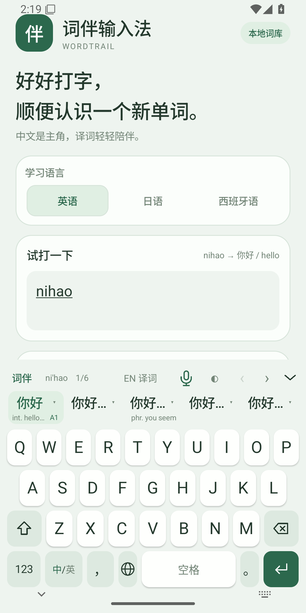
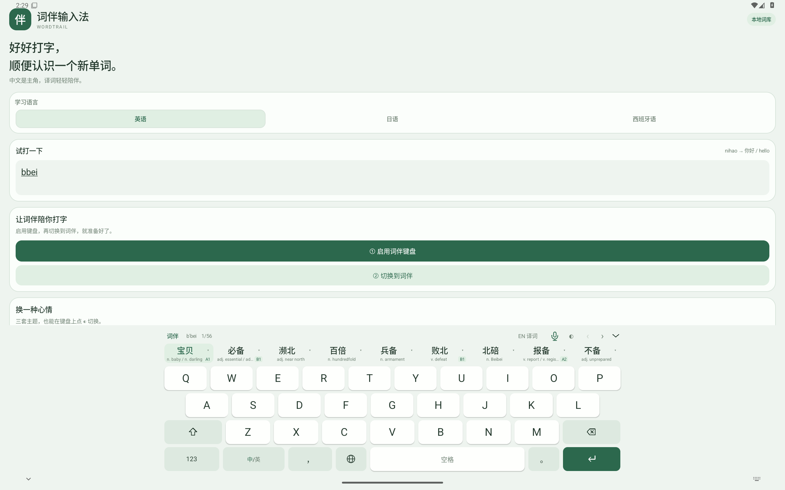
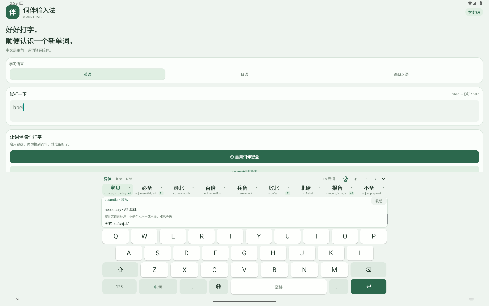
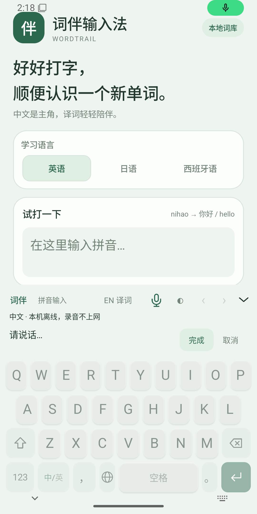
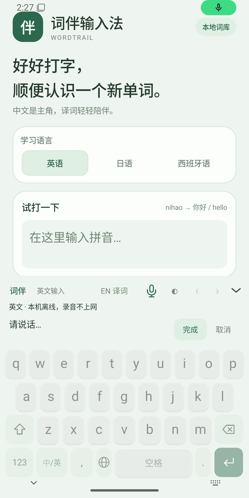
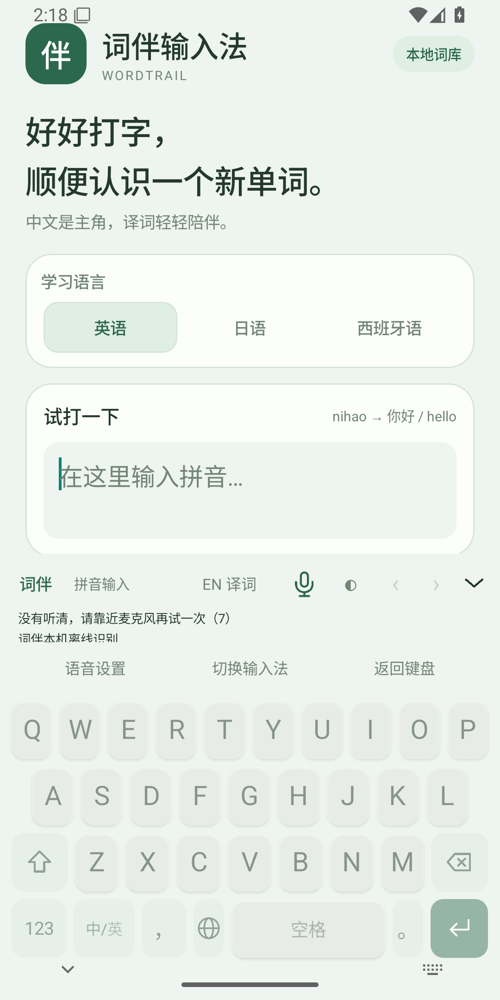

WORDTRAIL / 词伴输入法 0.1.6
打字更顺手，单词有等级。
空闲时收起候选区；中文、译词紧凑两行，手机同时显示约 5 个候选，平板最多 9 个。底部常驻中/英切换，工具栏最右侧向下箭头随时收起键盘并取消录音。点小箭头或向下滑候选，在可滚动的详情区查看英音、美音；青绿、粉紫、深色三套主题仍可切换。英语译词自动显示 A1–C2 小标签，详情可查看每条译词的参考等级；逗号移到中/英右边。




